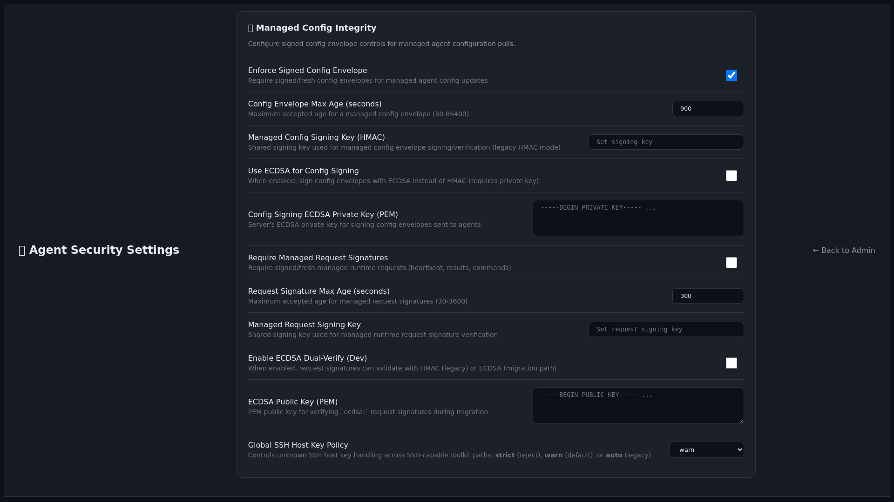
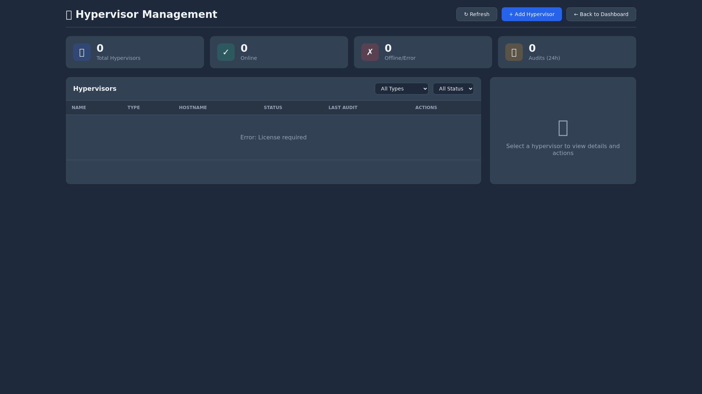

Audit Admin Toolkit — Public Preview
This is a pre-launch product preview for the Audit Admin Toolkit, Linux audit expansion work, and CMDB / asset platform capabilities. It is intentionally viewable but non-downloadable.
Preview scope
main
Core operator experience: dashboard visibility, findings, reports, schedules, administration, and scripting workflows.
feature/linux-audit-coverage-expansion
Expanded Linux audit breadth across mixed environments with stronger posture review and reporting coverage.
tool-spur/cmdb-asset-platform
Asset discovery, inventory visibility, vulnerability context, scan tracking, and CMDB-aligned workflows.
What is available in preview
Available now
- Feature summaries
- Approved screenshots
- Branch-level capability overview
- Early-interest contact path
Held back until full launch
- Downloadable installers or appliance images
- Release artifacts and customer bundles
- Commercial checkout / Gumroad publication
- Licensing and activation workflow
Selected preview screenshots




Interest and next contact
For early-interest discussions or launch notification, contact support@audittoolkitlabs.com with the subject Public Preview Interest — Audit Admin Toolkit.
Supporting references included in this folder: manifest (Markdown) and manifest (CSV).